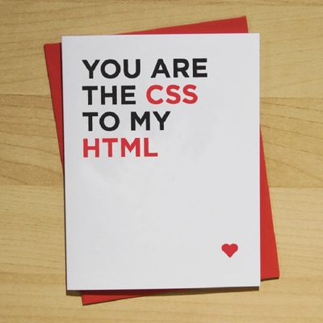
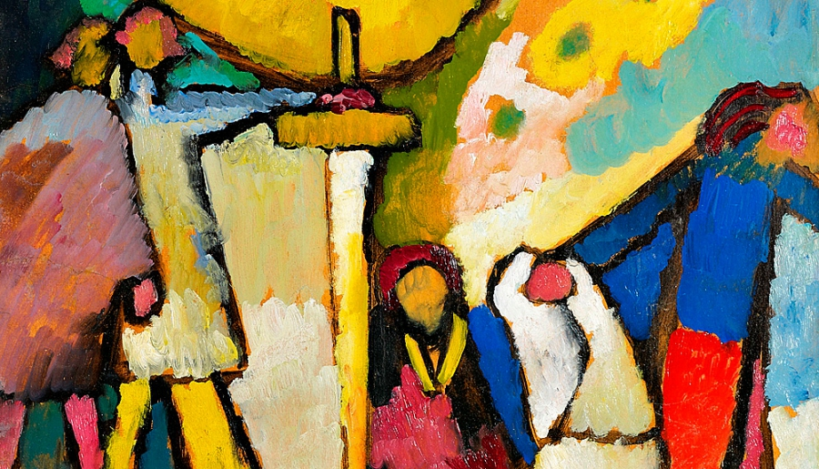

Around 1850, in Alsace, a schoolteacher with more children than he could afford was willing to become a grocer. This unfrocked clerk wanted compensation. Since he was giving up the schooling of minds, one of his sons would school souls. There would be a minister in the family; it would be Charles. Charles stole away; he preferred to take to the road in quest of a circus rider. His portrait was turned to the wall, and the family was forbidden to mention his name. Whose turn was it? Auguste hastened to imitate the paternal sacrifice. He went into business and did well for himself.
His portrait was turned to the wall, and the family was forbidden to mention his name. Whose turn was it? Auguste hastened to imitate the paternal sacrifice. He went into business and did well for himself. There remained Louis, who had no particular bent. The father took this quiet boy in hand and in less than no A
Gently, mortals, be discreet.
- 